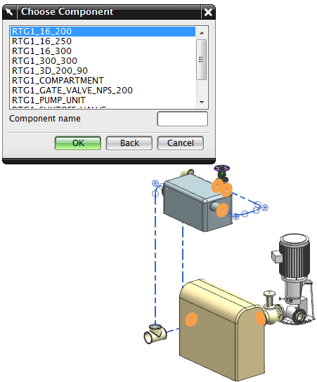

替换部件
替换部件命令将把一个管线部件替换为另一个类似的部件。
选择组件
当您选择替换部件命令时，将会打开选择组件对话框，其中显示了装配中的所有成员部件名称。

在选择组件列表中选择某个部件将会把该部件的所有实例都选中。然后在指定项对话框中选择想要的替换部件。
要替换部件的单个实例，需要直接在图形窗口中进行选择。
在管线装配中使用替换部件命令，而不是装配→组件→替换组件。替换部件将维持连接并调用设计规则检查，而替换组件则不会。
位于何处？
|
应用模块 |
机械管线布置 |
|
工具条 |
机械管线布置→编辑部件下拉菜单→替换部件 |
|
菜单 |
编辑→管线部件→替换部件 |
|
快捷菜单 |
右击某个部件→替换部件 |